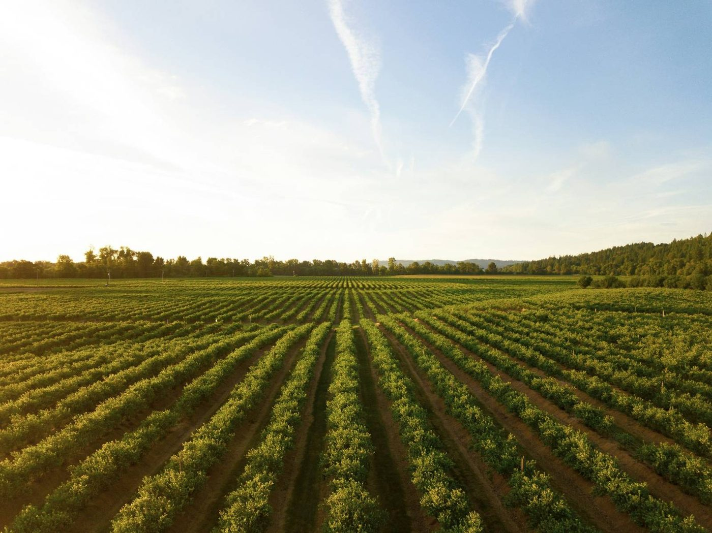
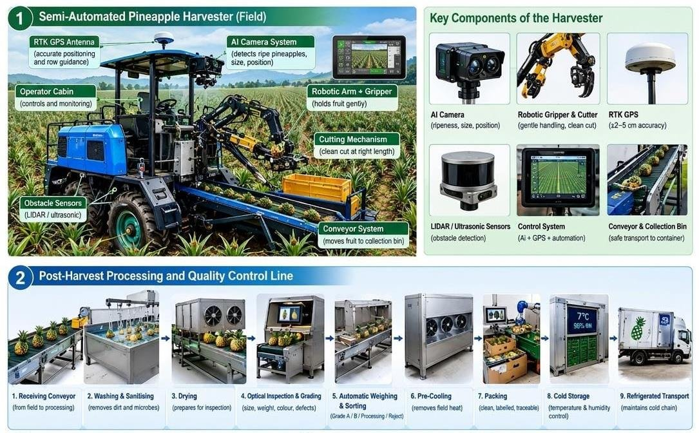
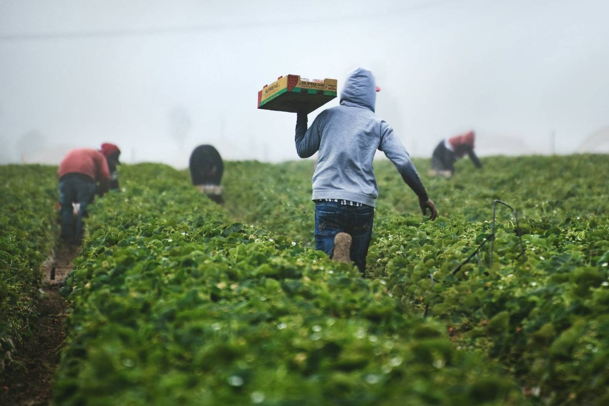

Select
We match machinery to your crop, terrain and operation, rather than selling from a fixed list.
Field and production machinery for estates and growers from HUAYO AGRO, a Chinese agricultural machinery manufacturer founded in 1988. Selected for Malaysian conditions, installed by our technicians and supported with local spares.

We match machinery to your crop, terrain and operation, rather than selling from a fixed list.
On-site delivery and set-up by local technicians in your area.
Operator training, maintenance, repairs and 3–5 day spare parts.
Field machinery works on the estate, before harvest reaches the post-harvest line.
Machinery for estate operations.
Shared machinery for a cluster of farms.
Mechanisation programmes for growers.
Field work ahead of the grading line.


Our estate in Pontian, Johor, is where we show machinery and IoT to buyers in real field conditions.
We size every line to the crop, volume, grades and floor space. Numbers below are placeholders until our engineers confirm them for your project.
| Product range | HUAYO AGRO field and production machinery. Range for Malaysia to be confirmed |
|---|---|
| Model selection | By crop, terrain and task, during consultation |
| Attachments | To be confirmed per model |
| Spare parts | 3–5 day turnaround |
| Training | Operator and maintenance training |
| Warranty | To be confirmed per model |
Draft layout. Specifications are provided on request and confirmed by our engineers for each project.
Assess needs, select the right machinery and plan CPPC layouts.
Machine design and features tailored to your operation.
On-site installation by local technicians in your area.
Two months of commissioning with training at your facility.
24/7 technical support and 3–5 day spare parts.
Tell us the crop, daily volumes and site. We’ll recommend a configuration and plan the layout with you.